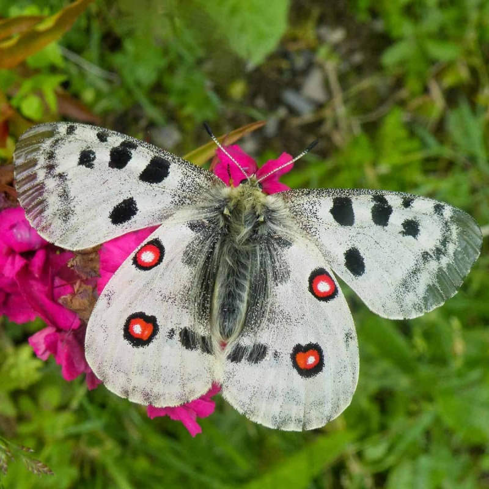

Parnassius apollo
- Common name
- Apollo
- Family
- Papilionidae
- Family common name
- Swallowtails and Parnassians
- On the wing
- June - September
One generation
- Habitat
- Mountains at 400 m. (1,300 ft) up to 2,300 m. (7,500 ft), although it is far more present above 1,000 m. (3,300 ft), in particular, hills and flowery alpine meadows and pastures.
- Larval host:
- stonecrop (Sedum species, mainly Sedum telephium, Sedum album, Sedum rupestre and Sedum ropsea), Hylotelephium caucasicum and houseleek (Sempervivum species).
Range Map
Seasonality